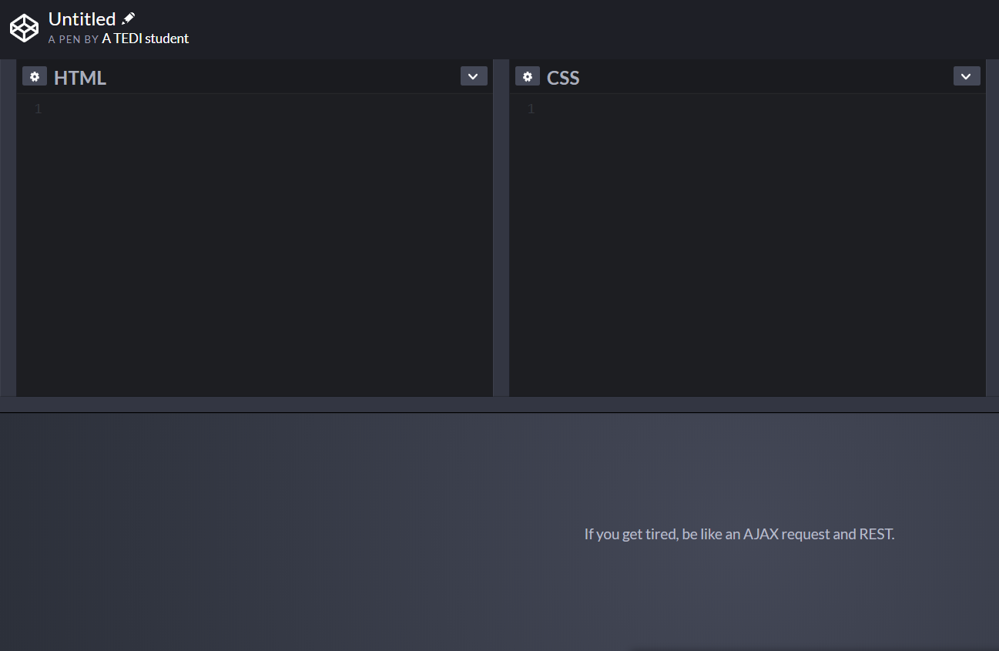

For the purposes of this node, you may utilise CodePen.io,
which allows you to create web pages online with no need for file management and setup.
In order to save your work, you will need to make an account.

You can also create HTML and CSS locally on your computer with a text editor, such as:
If you would like to create your files locally, to view your output:
- Find the file locations in your explorer
- Right click
- Select Open With
- Choose a browser of your choice.
Note, for the purposes of this node, this will be sufficient in displaying your HTML and CSS. This will
not work as begin to develop your backend.
Jargon Alert
There are several words within this field that are thrown around without clear explanation. Each node
will include a jargon alert at the beginning that aims to cover all new terms before you dive in.
- Syntax is the structure of statements in a computer language.
- Frontend refers to the client side of an application (what the user will interact with).
- Backend refers to the server side of an application (how everything works behind the scenes).
All set?
Start Node